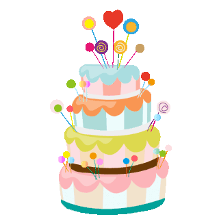

Your browser does not support the video tag.
问候加载中...
北京时间加载中...
星期加载中...
正在获取天气...
无标题
未知艺术家
更改壁纸
×
×
添加快捷方式
名称
图标（可选）
URL
取消
保存
▶
快捷应用
+
◀
×
快捷面板
🎂 记录生日
确定
距离生日还有
--
天
重置日期
小猫为你准备了一个小惊喜，
去看看

Happy Birthday!
返回
📝 备忘录
+
🧮 计算器
C
÷
×
←
7
8
9
-
4
5
6
+
1
2
3
=
0
.
🦖 小游戏：小恐龙快跑
按空格 / 点击 跳跃
最高分:
0
2025年 12月
今天
◀
▶
日
一
二
三
四
五
六